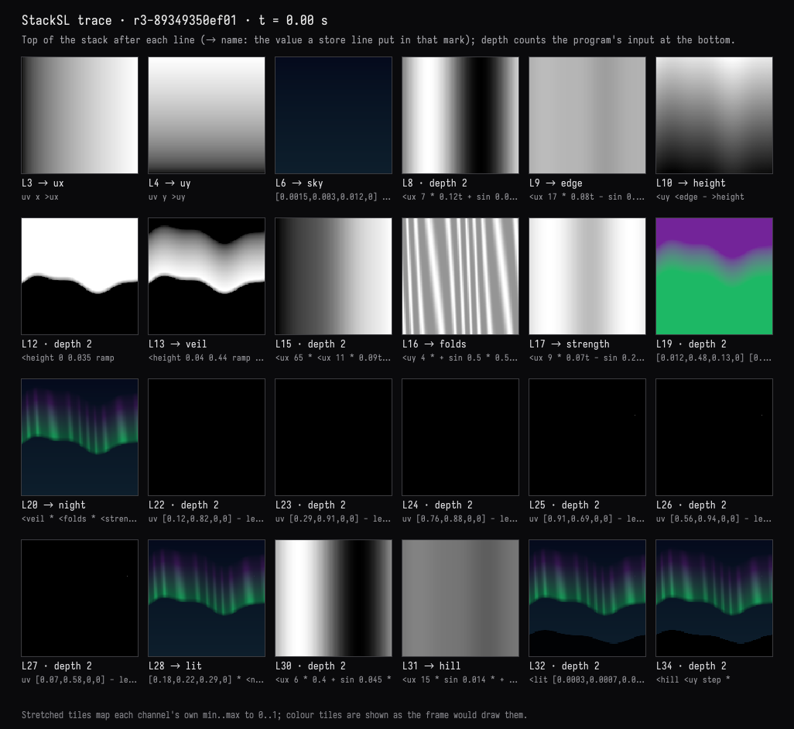
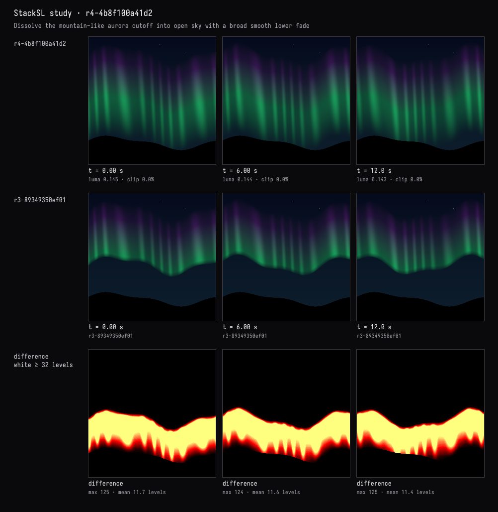

What is that mound?
The recorded exchange: the request, the tool activity, every image the tools returned to the model, and its reply. Expand tool activity to read the steps; open an image to see it full size.
In the middle, under the curtain, there's a big soft dark mound that reads like a second, nearer mountain — with stars in front of it. What is that shape, exactly? Show me what makes it, then make it read as open sky.
Tool activity · 3 steps
Starting AI conversation
TraceStackSLStudy finished (5288 ms)
Waiting for model
That shape is unlit sky, not another mountain. The trace shows what creates the illusion:
- Lines 8–10 define the aurora’s wavy lower edge.
- Line 12,
<height 0 0.035 ramp, switches the aurora off over a narrow band. That gives the plain blue sky beneath it a mountain-like outline. - Line 28 adds stars afterward, so they can appear across that region.
- The actual black hills are separate, on lines 30–34.
I’ll replace the abrupt lower cutoff with a broad, smooth wash of aurora light into the open sky, leaving the black hills unchanged.
Tool activity · 4 steps
InspectStackSLStudy finished (2 ms)
PatchStackSLStudy finished (1320 ms)
Waiting for model
Completed


It was plain blue sky outlined by the aurora’s abrupt lower cutoff, not a second mountain. The trace above shows that outline forming at line 12, before the actual hills are added.
Replaced the narrow cutoff:
<height 0 0.035 ramp
with a broad atmospheric fade:
-0.28 0.06 <height smoothstep
The curtain now dissolves into open sky instead of outlining a dark mound. Stars and the still, pure-black hills are unchanged. Checked the rendered result at 0, 6, and 12 seconds; compilation passed without warnings.